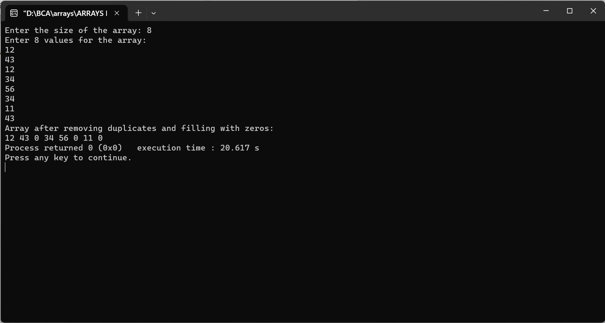

Enter an array from user and remove the duplicate values and fill with zero
#include
int main() {
int size;
printf("Enter the size of the array: ");
scanf("%d", &size);
int arr[size]; // Array to store user input
printf("Enter %d values for the array:\n", size);
for (int i = 0; i < size; i++) {
scanf("%d", &arr[i]);
}
for (int i = 0; i < size; i++) {
if (arr[i] != 0) {
for (int j = i + 1; j < size; j++) {
if (arr[i] == arr[j]) {
arr[j] = 0;
}
}
}
}
printf("Array after removing duplicates and filling with zeros:\n");
for (int i = 0; i < size; i++) {
printf("%d ", arr[i]);
}
return 0;
}
